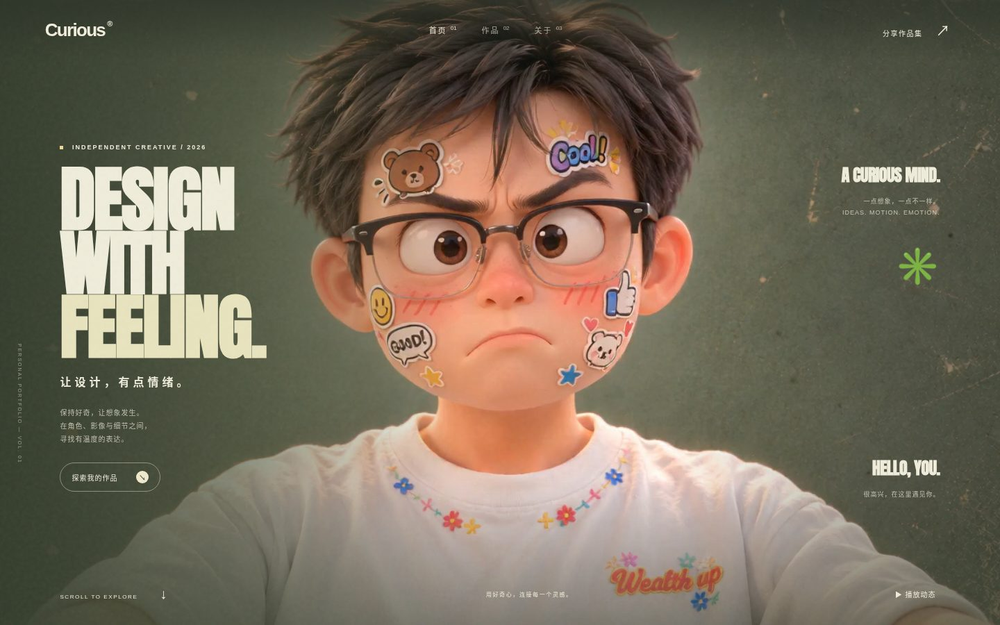
V001 · 2026-11-01 11:10
初版作品集：三段结构、角色与粗体标题
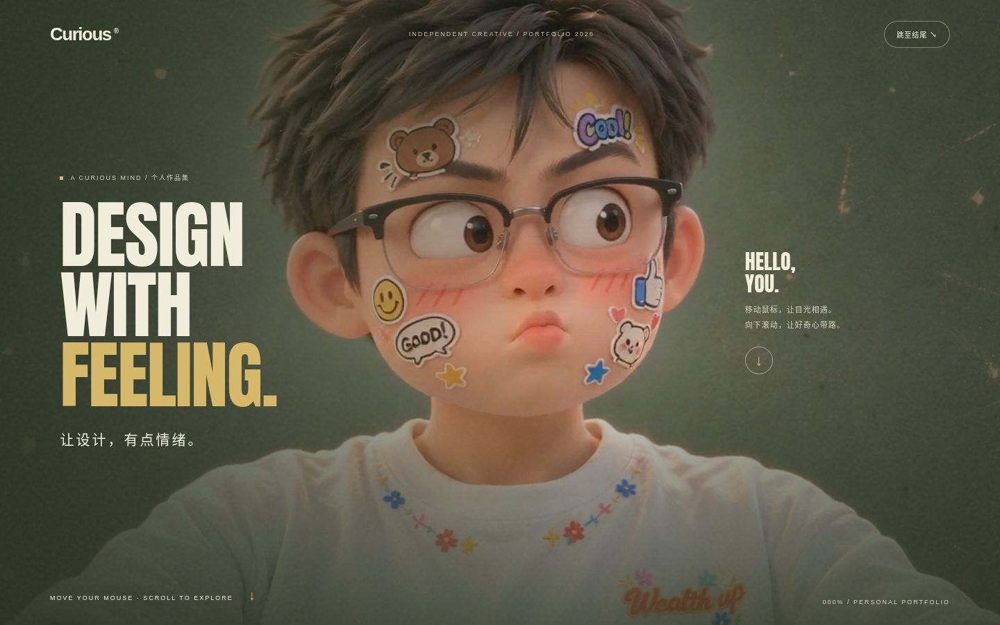
V002 · 2026-11-01 11:50
滚动叙事、人物跟随与场景逐步调试
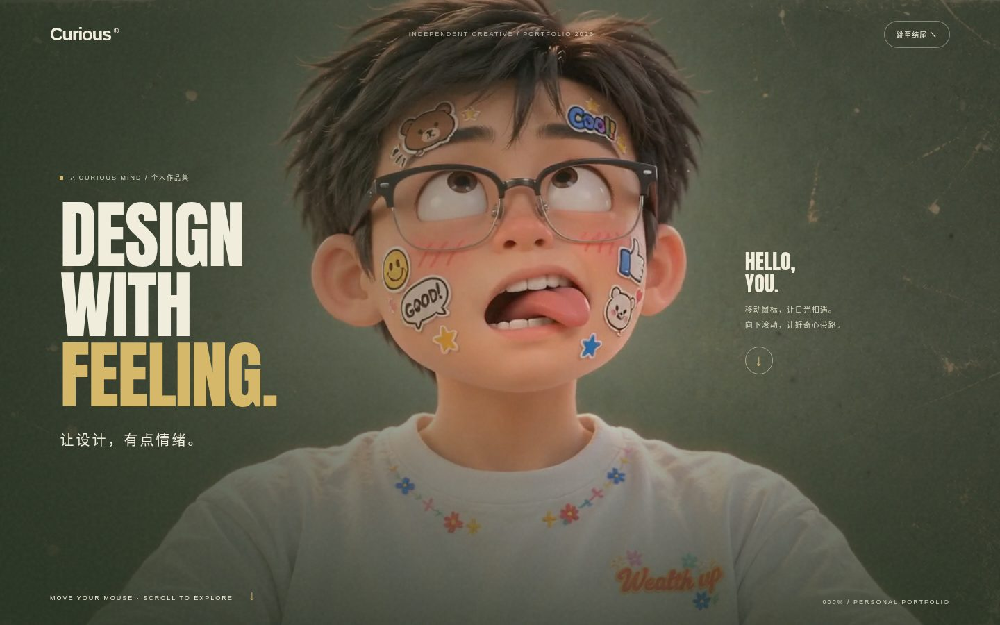
V003 · 2026-11-01 11:54
滚动叙事、人物跟随与场景逐步调试
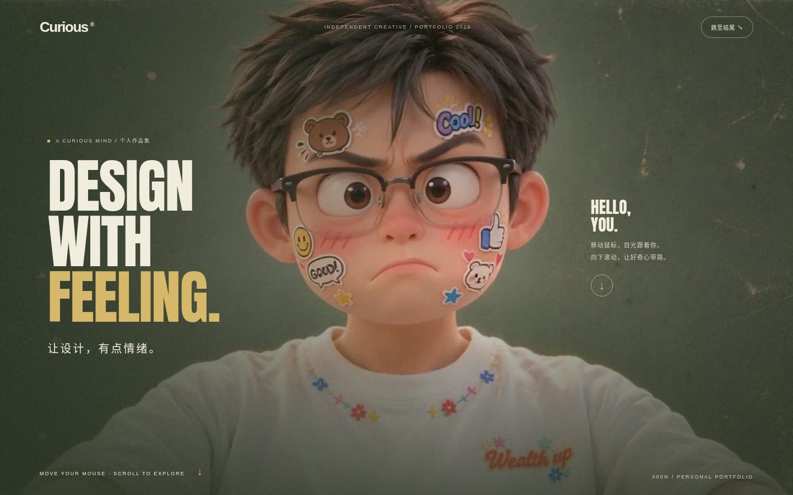
V004 · 2026-11-01 12:01
滚动叙事、人物跟随与场景逐步调试
V005 · 2026-11-01 12:05
滚动叙事、人物跟随与场景逐步调试
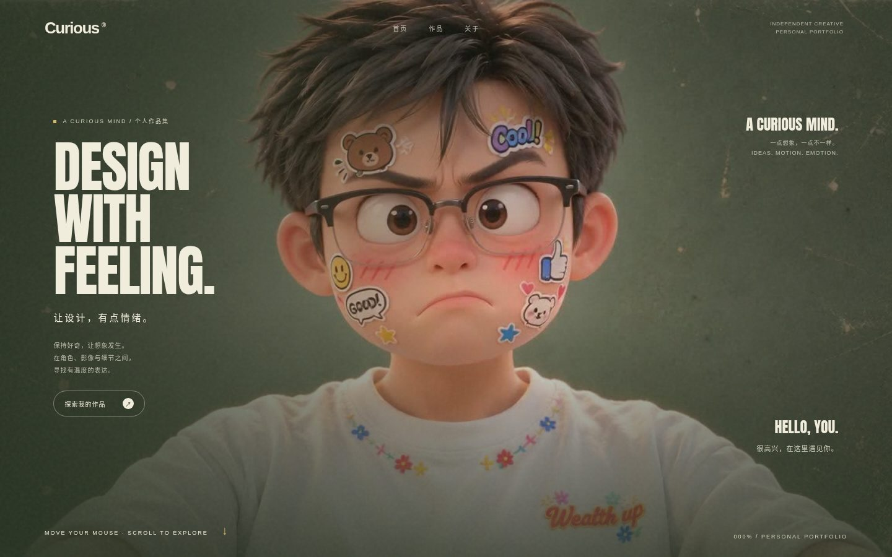
V006 · 2026-11-01 12:20
滚动叙事、人物跟随与场景逐步调试
V007 · 2026-11-01 12:27
滚动叙事、人物跟随与场景逐步调试
V008 · 2026-11-01 12:37
滚动叙事、人物跟随与场景逐步调试
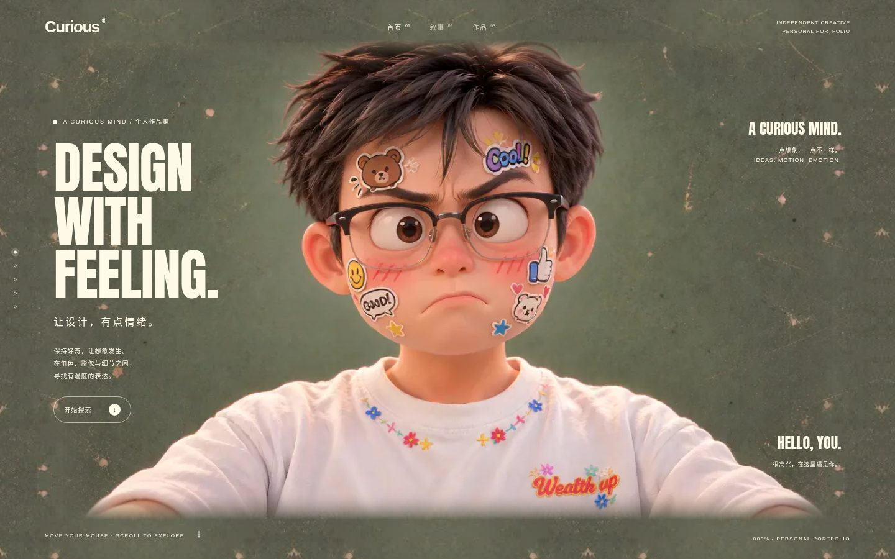
V009 · 2026-11-01 12:46
滚动叙事、人物跟随与场景逐步调试
V010 · 2026-11-01 13:06
滚动叙事、人物跟随与场景逐步调试
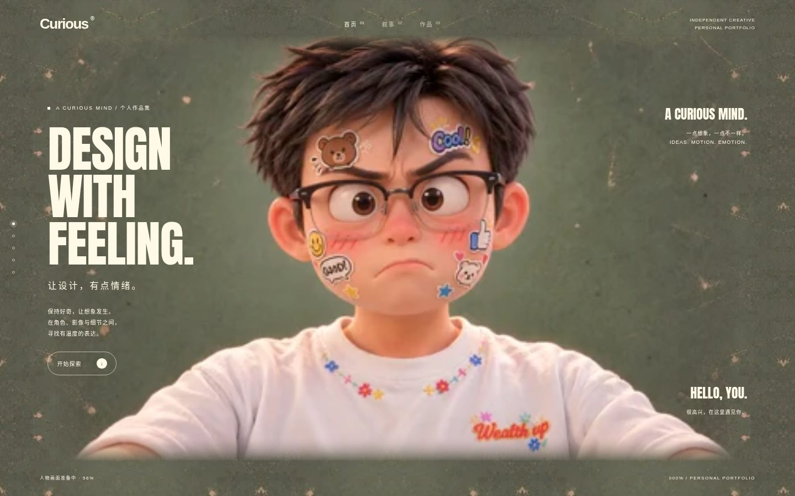
V011 · 2026-11-01 13:36
滚动叙事、人物跟随与场景逐步调试
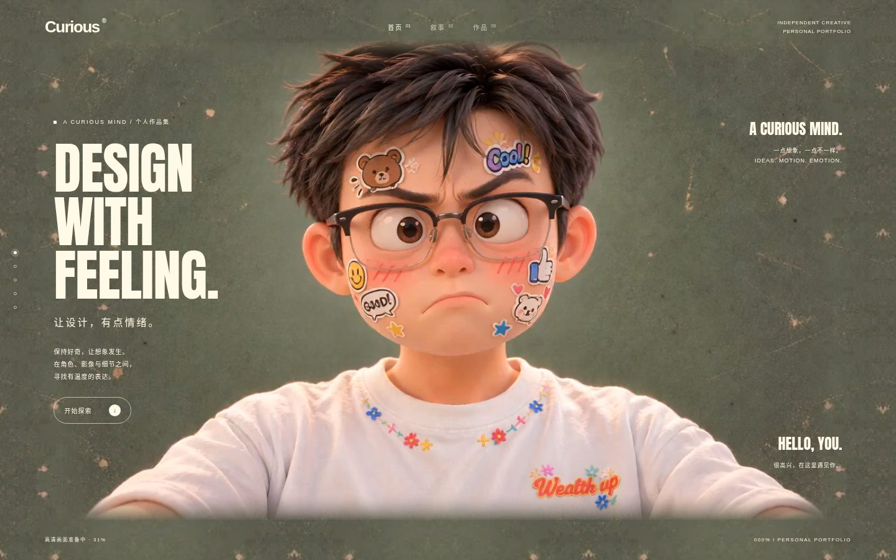
V012 · 2026-11-01 13:43
滚动叙事、人物跟随与场景逐步调试
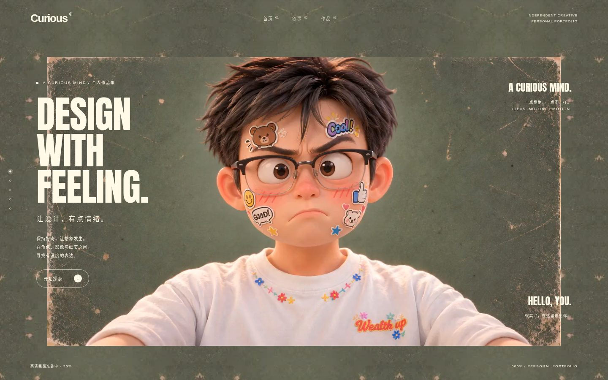
V013 · 2026-11-01 13:58
滚动叙事、人物跟随与场景逐步调试
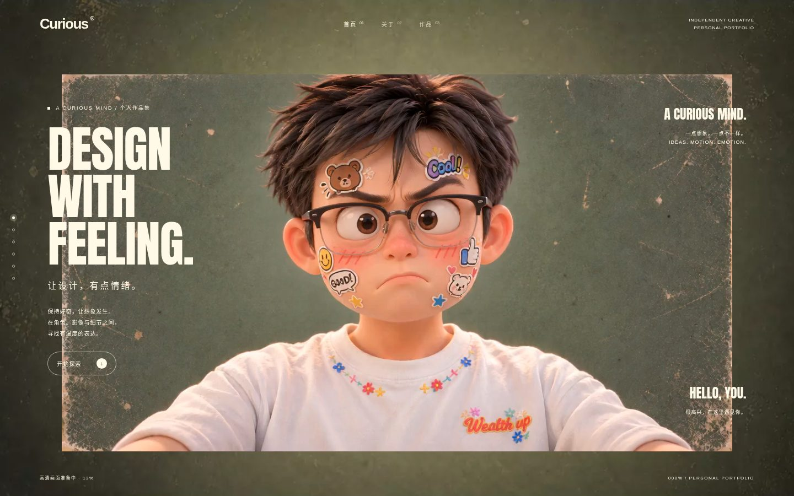
V014 · 2026-11-01 16:42
滚动叙事、人物跟随与场景逐步调试
V015 · 2026-11-01 16:47
滚动叙事、人物跟随与场景逐步调试
V016 · 2026-11-01 16:59
滚动叙事、人物跟随与场景逐步调试
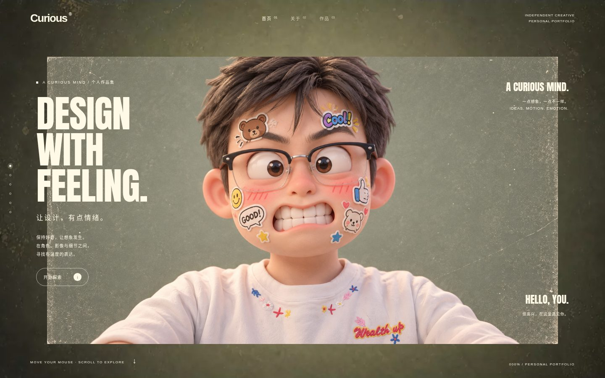
V017 · 2026-11-01 17:08
滚动叙事、人物跟随与场景逐步调试
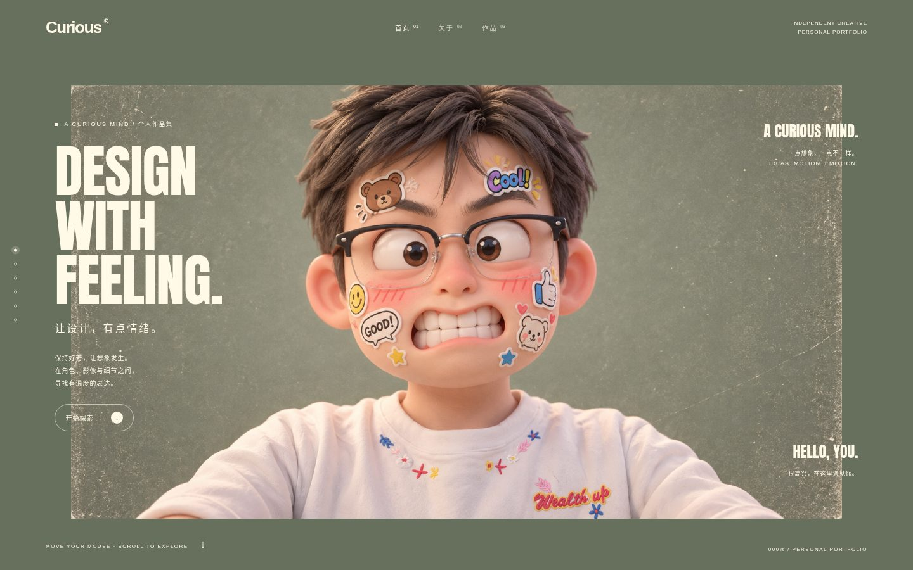
V018 · 2026-11-01 17:15
滚动叙事、人物跟随与场景逐步调试

V019 · 2026-11-01 17:22
滚动叙事、人物跟随与场景逐步调试
V020 · 2026-11-01 17:30
滚动叙事、人物跟随与场景逐步调试
V021 · 2026-11-01 17:37
滚动叙事、人物跟随与场景逐步调试

V022 · 2026-11-01 17:58
滚动叙事、人物跟随与场景逐步调试

V023 · 2026-11-01 18:05
滚动叙事、人物跟随与场景逐步调试

V024 · 2026-11-01 18:11
加入正视连接帧，改善转头过渡

V025 · 2026-11-01 18:21
正视连接帧与朝向过渡细节调试
V026 · 2026-11-01 18:27
正视连接帧与朝向过渡细节调试

V027 · 2026-11-01 18:33
正视连接帧与朝向过渡细节调试

V028 · 2026-11-01 18:50
加入全场景细水纹
V029 · 2026-11-01 18:54
水纹、文字和人物画面细节调试

V030 · 2026-11-01 18:59
水纹、文字和人物画面细节调试

V031 · 2026-11-01 19:33
水纹、文字和人物画面细节调试

V032 · 2026-11-01 19:39
水纹、文字和人物画面细节调试
V033 · 2026-11-01 19:47
水纹、文字和人物画面细节调试

V034 · 2026-11-01 22:00
水纹、文字和人物画面细节调试

V035 · 2026-11-01 22:05
提高人物帧画面清晰度
V036 · 2026-11-03 08:54
人物原生清晰度、动作与场景持续调试
V037 · 2026-11-03 09:41
人物原生清晰度、动作与场景持续调试

V038 · 2026-11-03 10:04
人物原生清晰度、动作与场景持续调试
V039 · 2026-11-03 10:48
人物原生清晰度、动作与场景持续调试

V040 · 2026-11-03 11:08
人物原生清晰度、动作与场景持续调试
V041 · 2026-11-03 11:31
人物原生清晰度、动作与场景持续调试
V042 · 2026-11-03 11:42
人物原生清晰度、动作与场景持续调试

V043 · 2026-11-03 12:10
人物原生清晰度、动作与场景持续调试

V044 · 2026-11-03 13:35
人物原生清晰度、动作与场景持续调试
V045 · 2026-11-03 13:44
人物原生清晰度、动作与场景持续调试

V046 · 2026-11-03 14:09
人物原生清晰度、动作与场景持续调试

V047 · 2026-11-03 14:41
人物原生清晰度、动作与场景持续调试

V048 · 2026-11-03 16:26
人物原生清晰度、动作与场景持续调试

V049 · 2026-11-03 16:54
人物原生清晰度、动作与场景持续调试

V050 · 2026-11-03 19:34
人物原生清晰度、动作与场景持续调试

V051 · 2026-11-03 19:41
人物原生清晰度、动作与场景持续调试

V052 · 2026-11-03 20:39
人物原生清晰度、动作与场景持续调试

V053 · 2026-11-03 20:47
人物原生清晰度、动作与场景持续调试

V054 · 2026-11-03 23:20
人物原生清晰度、动作与场景持续调试

V055 · 2026-11-04 08:24
人物原生清晰度、动作与场景持续调试

V056 · 2026-11-04 08:38
人物原生清晰度、动作与场景持续调试

V057 · 2026-11-04 08:55
人物原生清晰度、动作与场景持续调试
V058 · 2026-11-04 09:08
人物原生清晰度、动作与场景持续调试

V059 · 2026-11-04 09:17
人物原生清晰度、动作与场景持续调试

V060 · 2026-11-04 09:25
人物原生清晰度、动作与场景持续调试

V061 · 2026-11-04 09:30
人物原生清晰度、动作与场景持续调试

V062 · 2026-11-04 09:39
人物原生清晰度、动作与场景持续调试
V063 · 2026-11-04 10:39
加入海报压缩工具

V064 · 2026-11-04 10:54
导入海报并加入环形预览

V065 · 2026-11-04 11:22
清理海报画面标记

V066 · 2026-11-08 21:47
角色文件夹与表情卡片

V067 · 2026-11-09 14:35
调整人物锚点与表情
V068 · 2026-11-09 14:55
统一伸手落帧与六种表情

V069 · 2026-11-09 15:15
清理坐姿人物透明边缘

V070 · 2026-11-09 15:32
跑道式预览与挥手结尾

V071 · 2026-11-09 15:47
加入左侧分类导航

V072 · 2026-11-09 16:01
更新海报与角色分类名称

V073 · 2026-11-09 17:37
加入通用文件压缩工具

V074 · 2026-11-09 18:43
支持校验与分卷恢复

V075 · 2026-11-09 19:37
限制单个上传分卷大小

V076 · 2026-11-09 19:53
导入七组角色展板和 PSD

V077 · 2026-11-09 20:53
优化作品原图存储

V078 · 2026-11-09 21:13
整理海报分类

V079 · 2026-11-09 21:20
移除一张白底字体作品

V080 · 2026-11-09 21:32
循环海报与角色环形交互

V081 · 2026-11-09 21:50
文件夹居中与首页情绪文案
V082 · 2026-11-09 22:21
履历位置与水纹效果调整

V083 · 2026-11-10 13:48
持久化上传管理与导航

V084 · 2026-11-10 14:10
履历排版与文件夹直达预览

V085 · 2026-11-10 14:29
文件到作品预览的纸张过渡

V086 · 2026-11-10 15:22
目录滚动跟随当前作品

V087 · 2026-11-10 15:31
修复目录首尾缩略图可达性

V088 · 2026-11-10 16:03
加入挪威海产品牌展板

V089 · 2026-11-10 16:29
加入刺绣书籍排版展板

V090 · 2026-11-10 17:01
加入三组空间设计展板

V091 · 2026-11-10 17:18
完整图拖动、缩放与排版轮播

V092 · 2026-11-10 17:32
排版 BounceCards 与透明查看

V093 · 2026-11-10 18:38
数据驱动的包装吊牌展示

V094 · 2026-11-10 18:51
四张吊牌同时展示

V095 · 2026-11-10 19:19
共享吊牌场景、品牌与空间交互

V096 · 2026-11-10 19:34
修复吊牌重叠与空间点击

V097 · 2026-11-10 19:46
调整人物手臂和水纹反光

V098 · 2026-11-10 20:02
管理删除同步与作品选择修复
V099 · 2026-11-10 20:16
公开分享、管理权限与二维码

V100 · 2026-11-10 21:41
作品预览和结尾切页修复

V101 · 2026-11-10 22:59
图库滚动与专用结尾入口

V102 · 2026-11-11 14:10
响应式布局与手机手势隔离

V103 · 2026-11-11 14:27
恢复四张原始包装展板

V104 · 2026-11-11 15:14
新增 UI 分类和造纸术展板

V105 · 2026-11-11 16:06
新增两个 UI 项目与实体文件交互

V106 · 2026-11-11 16:30
放大文件、增加贴纸和鼠标滑动

V107 · 2026-11-11 16:41
三张大文件与分组选择

V108 · 2026-11-11 16:48
七张大文件同时展开
V109 · 2026-11-11 16:57
修复文件热区与缩放拖动

V110 · 2026-11-11 17:12
文件夹收到底部与原贴画封面

V111 · 2026-11-11 17:22
丰富封面贴画、纸纹与涂鸦

V112 · 2026-11-11 17:33
修复封面闪烁和弹簧回位

V113 · 2026-11-11 17:41
放大关闭状态文件夹
V114 · 2026-11-11 17:51
关闭时收回所有文件并取消拖动

V115 · 2026-11-11 18:08
UI 展板居中与控件对齐

V116 · 2026-11-11 18:34
手机人物、3D 吊牌与花生糕裁边

V117 · 2026-11-11 18:44
关闭文件夹也可滑向作品预览
V118 · 2026-11-11 23:15
文件内容页、手机遮罩与入口修复
V119 · 2026-11-12 08:30
正式更名“好奇有形 · Curious”

V120 · 2026-11-12 08:46
手机跟随、艺术字体与婚礼海报
V121 · 2026-11-12 08:58
工具界面暖白配色与海报系列置顶
V122 · 2026-11-12 09:05
调整同类英文标题排版
V123 · 2026-11-12 09:21
统一轻量标题并拓宽电脑履历

V124 · 2026-11-12 13:39